Yapay zekâ etiği beyan süreci hakkında sıkça sorulan soruların cevapları.
Cumhurbaşkanlığının vizyonu ve 11. Kalkınma Planı doğrultusunda yürürlüğe konulan Ulusal Yapay Zekâ Stratejisi çerçevesinde hazırlanan "Eğitimde Yapay Zekâ Politika Belgesi ve Eylem Planı (2025-2029)", Millî Eğitim Bakanlığının dijital dönüşüm ve yapay zekâ ekosistemine yönelik en kapsamlı yol haritalarından biri olarak 17 Haziran 2025 tarihinden itibaren uygulamaya alınmıştır.
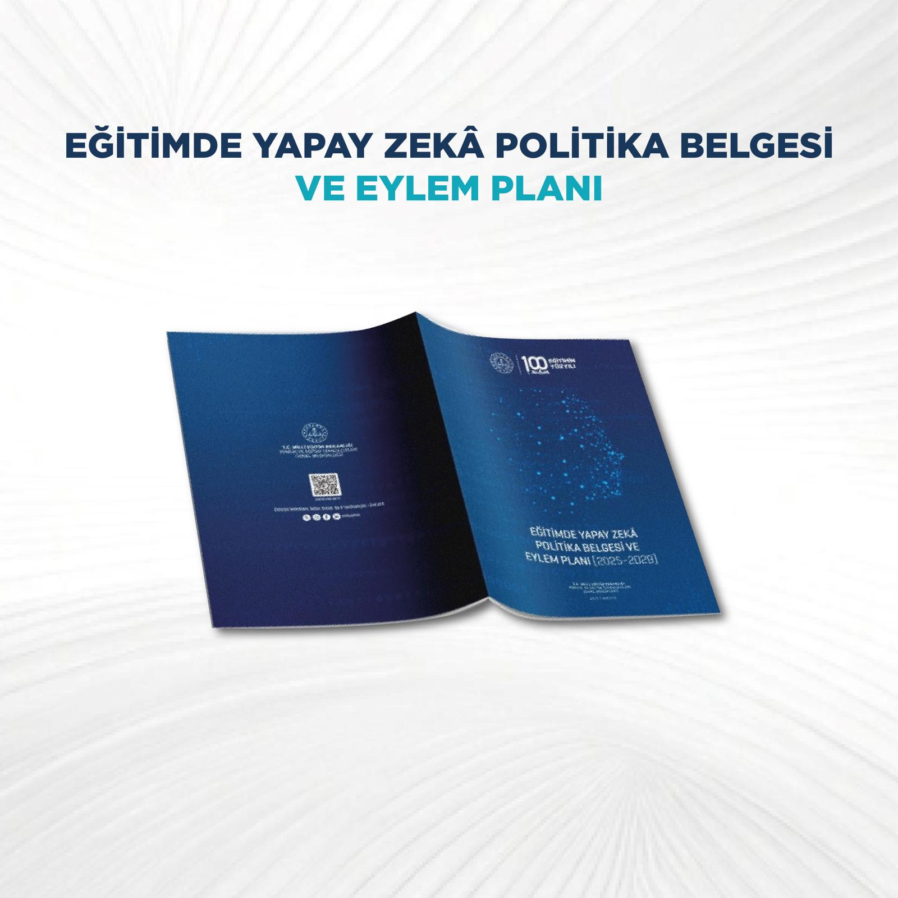
Belge; yönetimden okul süreçlerine, öğretmen eğitiminden öğrenci kazanımlarına kadar uzanan geniş bir kapsamda 4 hedef, 15 politika ve 40 eylem adımı içermektedir.
Eylem Planı kapsamında, Bakanlık bünyesinde yapay zekâ projelerini, kullanılan araçları ve bu araçların kullanım çerçevesini etik açıdan değerlendirmek ve denetlemek amacıyla "Yapay Zekâ Uygulamaları Etik Kurulu" ve bu kurula bağlı alt komisyonların kurulması hedeflenmiştir. Bu doğrultuda, Talim ve Terbiye Kurulu Başkanlığı koordinasyonunda ilgili genel müdürlüklerle birlikte yürütülen çalışmalar sonucunda "Millî Eğitim Bakanlığı Yapay Zekâ Uygulamaları Etik Kurulu Yönergesi" hazırlanmış ve 22.10.2025 tarihli Bakanlık Oluru ile yürürlüğe girmiştir.
Anılan Yönerge hükümleri uyarınca, eğitim ve öğretim kurumlarında gerçekleştirilen yapay zekâ uygulamalarında etik ilkelere uygunluğun sağlanması amacıyla öğretmenler ile Bakanlığın merkez ve taşra teşkilatı birimleri tarafından Yapay Zekâ Uygulamaları Etik Beyan Bildirim Sistemi (YAZEK) üzerinden Etik Beyan Formunun çevrimiçi olarak doldurulması esası getirildi. YAZEK’i Millî Eğitim Bakanlığına bağlı kurumlarda gerçekleştirilen yapay zekâ uygulamalarının etik ilkelere uygunluğunu beyan etmek, takip etmek ve olası etik ihlal süreçlerini yönetmek amacıyla oluşturulmuş yönetişim altyapısı olarak konumlandırıyoruz. 22 Ekim 2025’te yürürlüğe giren Millî Eğitim Bakanlığı Yapay Zekâ Uygulamaları Etik Kurulu Yönergesi YAZEK ve ilgili çalışmaların hukuki-idari zeminini oluşturdu; 2 Şubat 2026 itibarıyla da Yapay Zekâ Uygulamaları Etik Beyan Sistemi (YAZEK) devreye alındı.
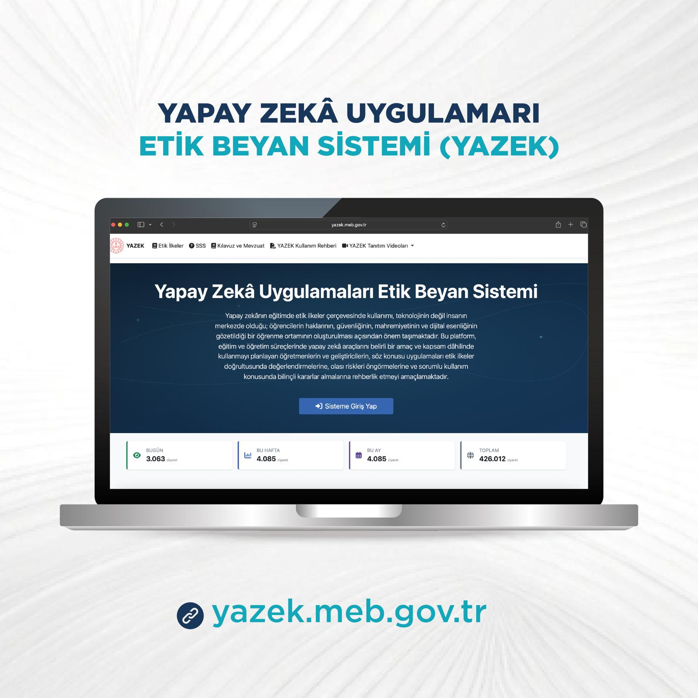
Bu çerçevede, Bakanlık bünyesinde yürütülen yapay zekâ uygulamalarına yönelik etik ilkelerin belirlenmesi, uygulanması, izlenmesi ve değerlendirilmesine ilişkin usul ve esasları açıklamak; Yapay Zekâ Uygulamaları Etik Üst Kurulu, il ve ilçe yapay zekâ uygulamaları etik kurulları ile okul yapay zekâ etiği ekiplerinin oluşumu, yapısı, görev, yetki ve sorumluluklarına ilişkin düzenlemeleri ortaya koymak amacıyla "Eğitimde Yapay Zekâ Uygulamaları Etik Kılavuzu" hazırlandı.
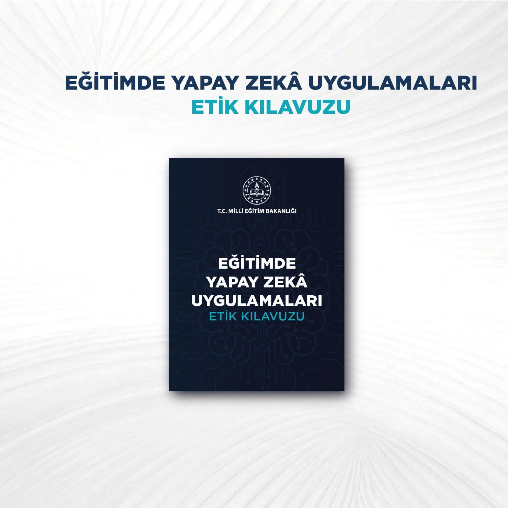
Buradaki ana motivasyonumuz çok net: Yapay zekâ eğitimde hızla yaygınlaşıyor; biz de “önce etik ve hesap verebilirlik”, “sonra ölçekleme” yaklaşımıyla sahada izlenebilir bir sistem kuruyoruz. Bu kapsamda YAZEK’in kuruluş gerekçelerinin, özellikle eğitimde yapay zekâ uygulamaları için etik ilkelerin belirlenmesi ve kullanım standartlarının oluşturulmasının “Eğitimde Yapay Zekâ Kültürü Oluşturmak” hedefinin ilk halkası olduğunu söyleyebiliriz.
YAZEK’in önemini anlamak için önce hizmet ettiğimiz kitlenin devasa büyüklüğüne bakmamız gerekir. 2024-2025 eğitim öğretim yılı verilerimize göre Türkiye’de örgün eğitim kapsamında tam 17 milyon 956 bin 523 öğrencimiz var. Bu sadece bir rakam değil; bu, Avrupa’daki pek çok ülkenin toplam nüfusundan daha büyük bir öğrenci kitlesinden bahsediyoruz demektir.
Bu 18 milyona yakın evladımızın yaklaşık;
Ayrıca bu süreçlerin mimarı olan 1 milyon 187 bin 409 öğretmenimiz sahada görev yapıyor. Yapay zekâ bugün dersliklerimize, ödevlere, hatta değerlendirme süreçlerine girmiş durumda. Örgün eğitimde, 2024-2025 eğitim öğretim yılında 59 bin 336'sı resmî okul, 14 bin 700'ü özel okul ve 4'ü açık öğretim okulu olmak üzere toplam 74 bin 40 okulun ve 753 bin 571 dersliğin olduğu bir ekosistemde, yapay zekânın “kontrolsüz ve rehbersiz kullanılmaması” için 18 milyon öğrenci ve 1.2 milyon öğretmenin olduğu bu büyük ailede, yapay zekânın etik sınırlarını çizmek, evlatlarımızın verilerini korumak bizim için bir seçenek değil, asli bir görevdir. YAZEK, işte bu devasa ölçekte “önce etik ve hesap verebilirlik” diyebilmek için kurulmuş dünyadaki sayılı yönetişim sistemlerinden biridir.
Bu açıdan bakıldığında “Neden ihtiyaç duyuldu?” sorusunun cevabı, eğitim bağlamında yapay zekânın doğasıyla ilgili: Yapay zekâ artık sadece içerik üretmiyor; kimi senaryolarda öğrenci verisini (yazı/ses/görüntü/not vb.) işliyor ya da çıktıları öğrenci hakkında değerlendirme/karar süreçlerine (not verme, seviye belirleme, yönlendirme vb.) temas edebiliyor. Üstelik algoritmik yanlılık ve veri temelli önyargı riski, bazı öğrenci grupları aleyhine adaletsiz sonuçlar üretebiliyor.
Tam da bu yüzden YAZEK tüm uygulamaların Eğitimde Yapay Zekâ Uygulamaları Etik Kılavuzumuzda belirttiğimiz sekiz etik ilkeyi gözeterek tasarlanmasını ve yürütülmesini zorunlu çerçeve olarak tarif ediyor:
Burada bizim özellikle vurguladığımız nokta şu: Sahada yapay zekânın etkili, verimli kullanım ve teknik beceriler öne çıktığında etik bazen istemeden de olsa geri plana itilebiliyor; oysa biz sürdürülebilir entegrasyonun şartının etik farkındalığın sistematik biçimde gelişmesi olduğuna inanıyoruz.
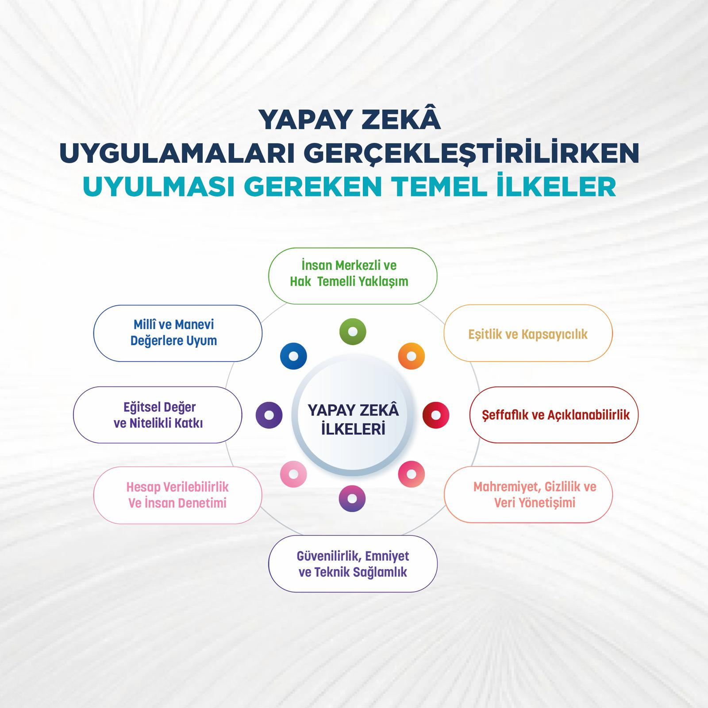
Yapay zekâ uygulamalarının temel amacı öğrencinin akademik, sosyal ve duygusal esenliğini merkeze almak ve öğrencilerin bireysel farklılıklarını gözeterek bütüncül gelişimlerini desteklemek olmalıdır. Bu ilke, teknolojinin eğitimde amaç değil eğitsel hedeflere ulaşmayı kolaylaştıran bir araç olarak konumlandırılmasını gerektirir. Teknoloji, öğretme–öğrenme süreçlerini zenginleştirmek, öğretmenlerin iş yükünü azaltmak ve öğrencilerin öğrenme deneyimlerini iyileştirmek için kullanılmalıdır. Yapay zekâ uygulamaları öğrencilerin yaratıcılığını, eleştirel düşünme becerilerini ve sosyal-duygusal gelişimlerini sınırlamak yerine bu alanları desteklemeli; öğrenme ortamındaki insan etkileşimini güçlendirmelidir.
Bu ilkeye göre yapay zekâ uygulamalarında;
Yapay zekâ uygulamaları ile tüm öğrenciler için sosyoekonomik durum, coğrafi konum, cinsiyet, dil, ırk, din ya da özel gereksinim gibi herhangi bir faktöre dayalı ayrımcılığı önleyen, adil, eşit ve erişilebilir öğrenme fırsatları sunulmalıdır. Bu teknolojiler, dezavantajlı grupların erişimini kısıtlamamalı, kapsayıcı öğrenme ortamlarını güçlendirmelidir. Kişiselleştirilmiş öğrenme önerileri geliştirilirken bu önerilerin öğrencinin potansiyelini sınırlandırmaması; öğrenme sürecini destekleyen, gelişim odaklı ve kapsayıcı bir yapı sunması esastır.
Bu ilkeye göre yapay zekâ uygulamalarında;
Yapay zekâ araçlarının karar alma süreçleri, özellikle öğrenci değerlendirmesi, yönlendirmesi ve kaynak önerisi gibi kritik alanlarda; öğrenciler, öğretmenler ve veliler tarafından anlaşılabilir, net ve açıklanabilir olmalıdır. Kullanıcıların, bir insanla mı yoksa bir yapay zekâ sistemiyle mi etkileşimde olduklarını bilme hakkı temel kabul edilmelidir. Bir yapay zekâ aracı öğrencinin akademik başarısı ya da öğrenme yoluna ilişkin bir öneri sunuyorsa bu sonuca hangi veriler ve hangi mantıksal süreçler üzerinden ulaştığını sade ve anlaşılır şekilde açıklayabilmelidir. İç işleyişi anlaşılmayan “kara kutu” sistemlerin, öğrenci başarısını doğrudan etkileyen alanlarda kullanımı sınırlandırılmalı; şeffaflık, izlenebilirlik ve açıklanabilirlik ilkeleri sağlanmalıdır.
Bu ilkeye göre yapay zekâ uygulamalarında;
Öğrenci ve öğretmenlere ait kişisel ve eğitsel veriler, 6698 sayılı Kişisel Verilerin Korunması Kanunu (KVKK) ve ilgili tüm ulusal düzenlemelere tam uyum içinde, en yüksek güvenlik standartlarıyla korunmalıdır. Veri toplamanın amacı, kapsamı, kullanım şekli ve saklama süresi açık biçimde tanımlanmalı ve toplanan veriler bu amaçlar dışında kullanılmamalıdır. Yalnızca gerekli nitelikteki veriler toplanmalı ve anonimleştirme teknikleri kullanılarak korunmalıdır. Olası veri ihlallerine karşı hızlı, etkili ve hukuka uygun müdahale süreçleri önceden yapılandırılmalı ve kesintisiz şekilde işletilmelidir.
Bu ilkeye göre yapay zekâ uygulamalarında;
Uygulama planlanırken kullanılan yapay zekâ araçlarının teknik doğruluk, tutarlılık ve güvenilirlik açısından yüksek performans göstermesi zorunludur. Sistemler, siber güvenlik tehditlerine karşı dayanıklı olmalı, hatasız ve güvenilir bir biçimde amaçlanan görevleri yerine getirmelidir. Yanlış veya yanıltıcı bilgi üretimi (halüsinasyon), sistem çökmesi ya da kötü niyetli müdahaleler gibi durumlar eğitim süreçleri açısından ciddi riskler doğurur. Bu nedenle, özellikle sınav hazırlama, notlandırma ve bilgi edinme gibi kritik kullanım alanlarında yapay zekâ araçlarının planlayıcı tarafından ön değerlendirmeden geçirilmesi, düzenli doğruluk testleriyle izlenmesi ve performanslarının sürekli denetlenmesi gereklidir.
Bu ilkeye göre yapay zekâ uygulamalarında;
Yapay zekâ araçlarının ürettiği sonuçlar, öneriler ve kararların nihai sorumluluğu her durumda insana aittir. Otomatikleştirilmiş sistemler, öğrencinin akademik geleceğini veya eğitimsel haklarını doğrudan etkileyen kritik kararlarda tek başına belirleyici olmamalı; süreç mutlaka yetkili bir insan tarafından denetim, değerlendirme ve onay aşamalarından geçirilmelidir. Sınıf geçme, disiplin süreçleri, burs değerlendirmeleri ve benzeri yüksek etkili karar alanlarında yapay zekâ yalnızca yardımcı bir araç olarak kullanılabilir. Yapay zekâ çıktılarının doğruluğunun teyidi, gerekli düzeltmelerin yapılması ve kararların etik-hukuki çerçeveye uygunluğunun sağlanmasında insani denetim mekanizması işe koşulmalıdır. Teknoloji ne kadar gelişmiş olursa olsun, nihai etik ve hukuki sorumluluk insan tarafında kalmalı; sistemler kendi kendine bağlayıcı sonuç üretme yetkisine sahip olmamalıdır.
Bu ilkeye göre yapay zekâ uygulamalarında;
Eğitim ve öğretim süreçlerinde gerçekleştirilen her yapay zekâ uygulaması, açık bir eğitsel amacı karşılamalı, öğretim programlarının hedefleriyle uyumlu olmalı ve öğrenme-öğretme süreçlerine nitelikli bir katkı sağlamalıdır. Yapay zekâ kullanımının gerekçesi, geçici eğilimler veya teknolojik popülerlik değil sağladığı kanıta dayalı eğitsel fayda olmalıdır. Yapay zekâ uygulamaları öğrencinin pasif bir bilgi alıcısı konumundan çıkarak aktif bir öğrenen hâline gelmesini desteklemeli; karmaşık problem çözme, yaratıcılık ve diğer üst düzey düşünme becerilerinin gelişimini güçlendirmelidir. Bu tür uygulamalar yalnızca bilgi sunmakla sınırlı kalmamalı, öğrenme sürecinin derinliğini ve öğrencinin öğrenme becerisini artırmaya yönelik somut katkılar üretmelidir.
Bu ilkeye göre yapay zekâ uygulamaları;
Yapay zekâ uygulamaları, 1739 sayılı Millî Eğitim Temel Kanunu’nda yer alan Türk millî eğitiminin genel amaçları ve temel ilkeleriyle uyumlu olmalı; millî, manevi, ahlaki ve kültürel değerlere aykırı içerik üretmemeli ve yönlendirme yapmamalıdır. Teknoloji kullanımının, ulusal kimliği, toplumsal değerleri ve etik mirası destekleyen bir çerçevede konumlanması esastır. Eğitim materyali üretimi ya da öğretim süreçlerinde yapay zekâ, toplumsal yapıyı zedeleyebilecek veya kültürel bütünlüğe zarar verebilecek içeriklerin oluşmasına yol açmamalıdır.
Bu ilkeye göre yapay zekâ uygulamalarında;
YAZEK, Millî Eğitim Bakanlığına bağlı her tür ve derecedeki resmî okulları, özel öğretim kurumlarını (özel okullar), bilim ve sanat merkezlerini (BİLSEM) ve halk eğitimi merkezlerini kapsamaktadır.
Biz bu sistemi “çok katmanlı bir yönetişim modeli” üzerine inşa ettik.
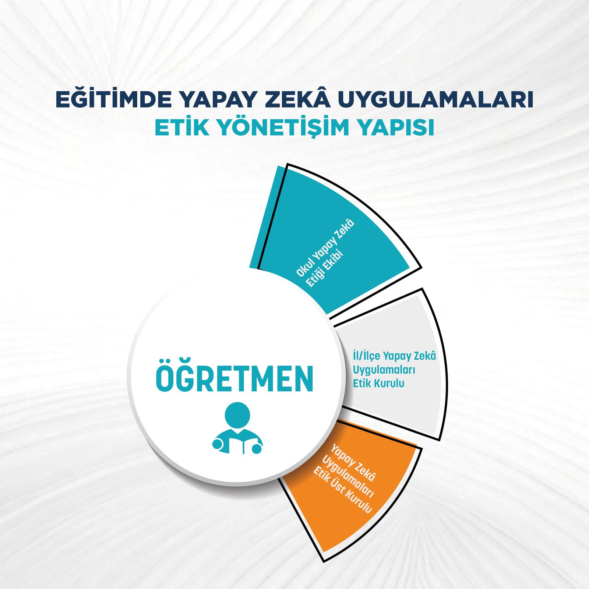
Değerlendirme ve rehberlik tek bir merkezden değil, bizzat uygulamanın yapıldığı okuldan başlıyor ve merkeze doğru dört ana halkadan oluşuyor:
İlk halkamız Okul Yapay Zekâ Etiği Ekipleri. Her okulumuzda müdür başkanlığında; müdür yardımcısı, varsa bilişim teknolojileri ve rehber öğretmenlerimizden oluşan bu ekipler, sahadaki ilk rehberlik ve denetim noktasıdır. Uygulamaları yerinde görür ve olası risklere anında müdahale ederler.
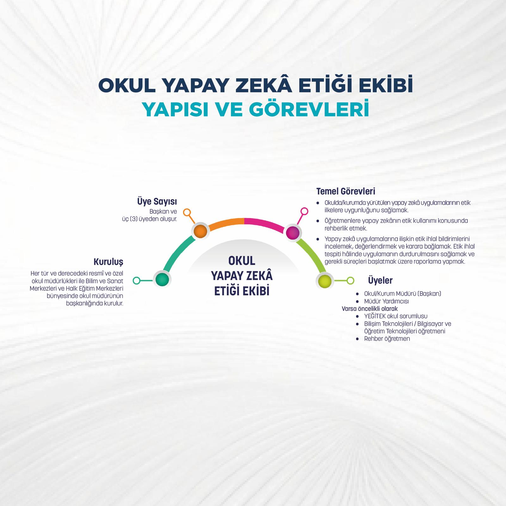
İkinci ve üçüncü halkalarımız ise İl ve İlçe Yapay Zekâ Uygulamaları Etik Kurulları. Bu kurullarımız, gelen itirazları değerlendirmenin yanı sıra bölge düzeyinde öğretmenlerimize rehberlik ederek etik farkındalık eğitimleri düzenlerler. Süreçlerin yerel düzeyde standartlara uygun ilerlemesini sağlarlar.
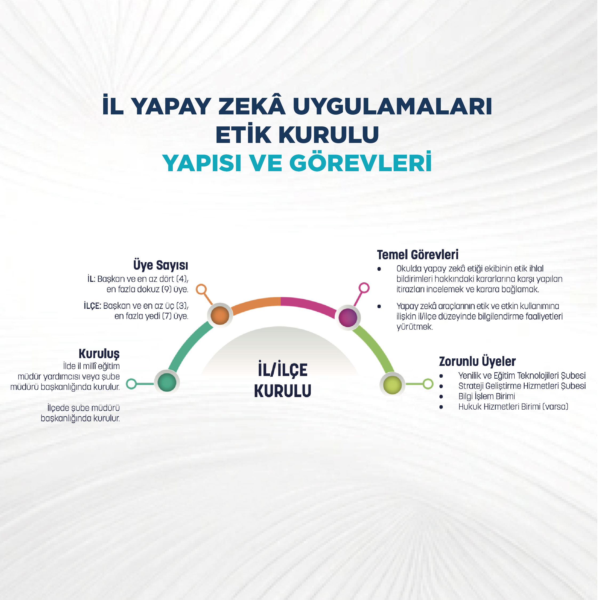
En tepede ise Yapay Zekâ Uygulamaları Etik Üst Kurulu yer alıyor. Başkanlığını yürüttüğüm bu kurul; Bakanlığımızın hukuktan stratejiye kadar farklı birimlerinin yanı sıra sivil toplum ve akademi temsilcilerini de barındıran çok geniş bir yapıya sahip. Biz burada sadece nihai kararları vermiyoruz, aynı zamanda ülkemizin eğitimde yapay zekâ politikalarını ve etik standartlarını belirliyoruz. Yani okuldan merkeze uzanan, her halkası birbirine bağlı, yaşayan ve izlenebilir bir denetim ve rehberlik ağı kurduk.
YAZEK’i kurgularken kapsamlı bir literatür taraması gerçekleştirdik. Teorik altyapımızı oluştururken UNESCO’nun 2021’deki “Yapay Zekâ Etiği Tavsiye Kararı”ndaki dört temel değer ve on ilkeyi, Avrupa Birliği’nin (AB) “Yapay Zekâ Yasası”ndaki (AI Act) risk temelli yaklaşımı ve “Güvenilir YZ” kriterlerini titizlikle inceledik. Bunların yanı sıra ulusal ve UNICEF gibi uluslararası birçok kuruluşun ve sivil toplum örgütlerinin hazırladığı raporları analiz ettik ve insanı merkeze alan bir anlayışla bir süreç planladık.
Biz bu çalışmada şunu gördük: Dünyanın çoğu ülkesinde etik ilkeler sadece “temenni” düzeyinde kalırken biz Türkiye olarak bunu YAZEK ile izlenebilir bir “yönetişim mekanizmasına” dönüştürdük. Belirlediğimiz sekiz etik ilke küresel literatürün bir sentezi ama bizim millî değerlerimizle yoğurulmuş bir halidir.
Kesinlikle hayır. Yapay zekâ hayatımızın bir gerçeği, ancak en büyük endişenin “Acaba üzerimize yeni bir evrak yükü mü binecek?” olduğunu biliyorum. Şunu en başta ve çok net söyleyeyim: YAZEK bürokratik bir yapı bildirmiyor, güven zemini oluşturuyor. Bizim yaklaşımımız bürokrasi üretmek değil sahada etik farkındalığı bir mesleki kültür haline getirmektir.
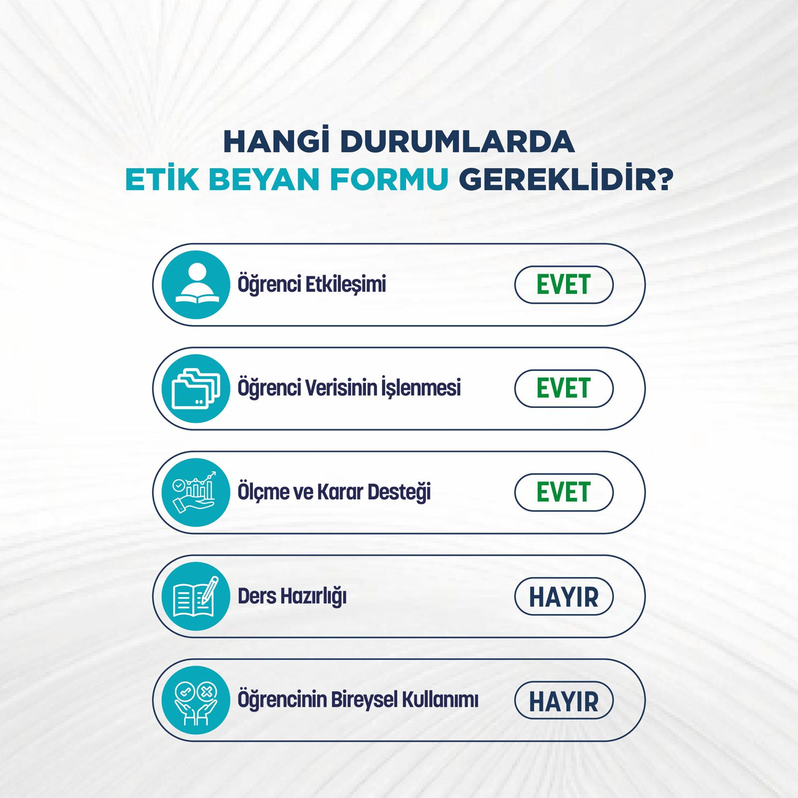
İşleyiş son derece sade. Eğer bir öğretmenimiz yapay zekâyı kendi ders hazırlığı için kullanıyorsa, kişisel gelişimi için faydalanıyorsa hiçbir beyan zorunluluğu yok.
Ne zaman ki işin içine evlatlarımız giriyor; yani yapay zekâ öğrenciyle doğrudan etkileşim kuruyor veya öğrenci verisini işleyip bir değerlendirme yapıyorsa, işte orada devreye giriyoruz. Öğretmenimiz YAZEK üzerinden çevrim içi olarak kısa bir Etik Beyan Formu dolduruyor.
Bu kapsamda öğretmenler ile Bakanlığın merkez ve taşra teşkilatı birimleri gerçekleştirecekleri yapay zekâ uygulamaları için YAZEK üzerinden beyan formunu doldurmak zorundadır.
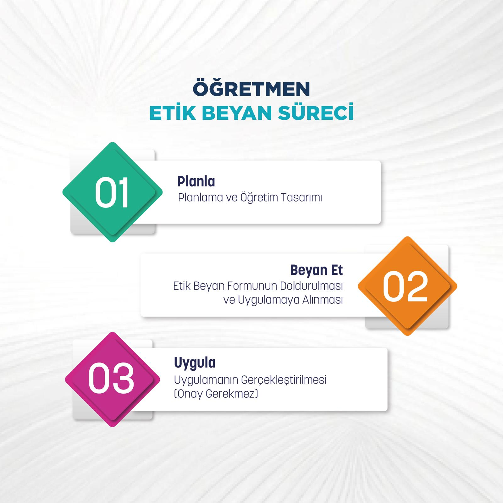
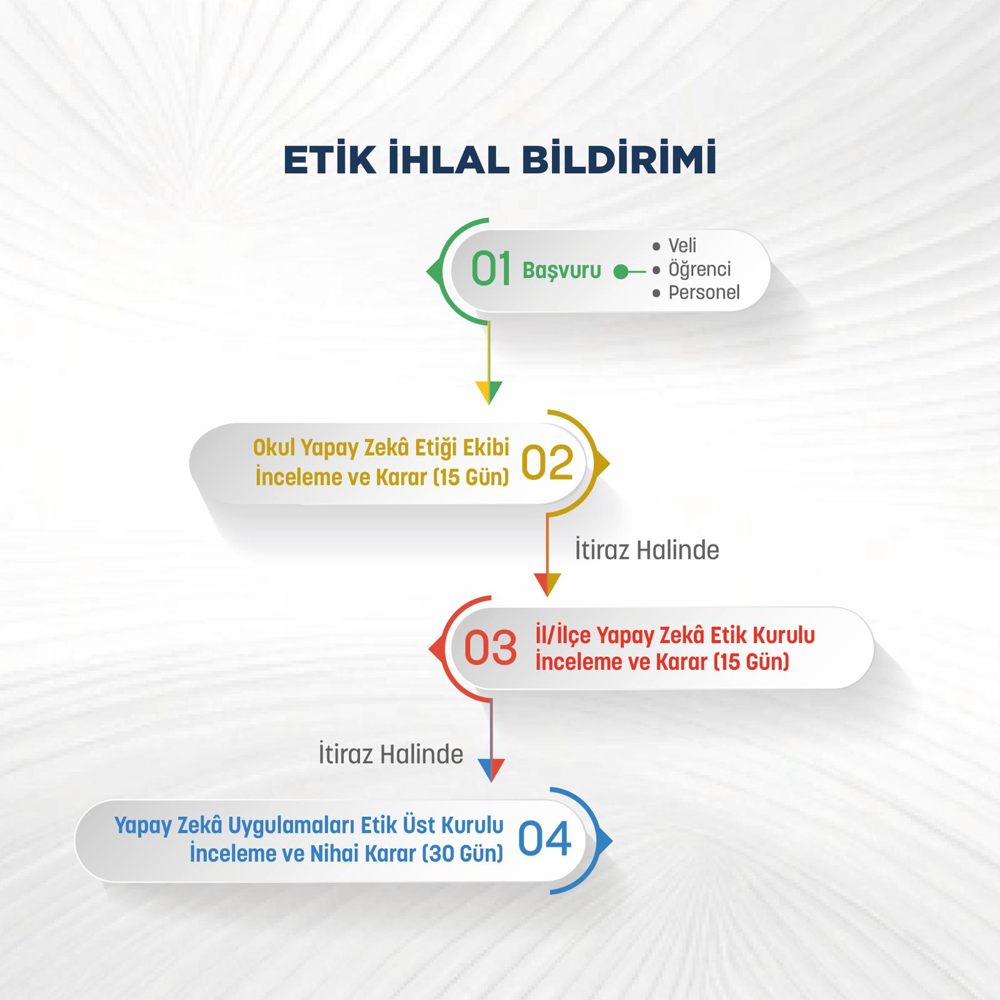
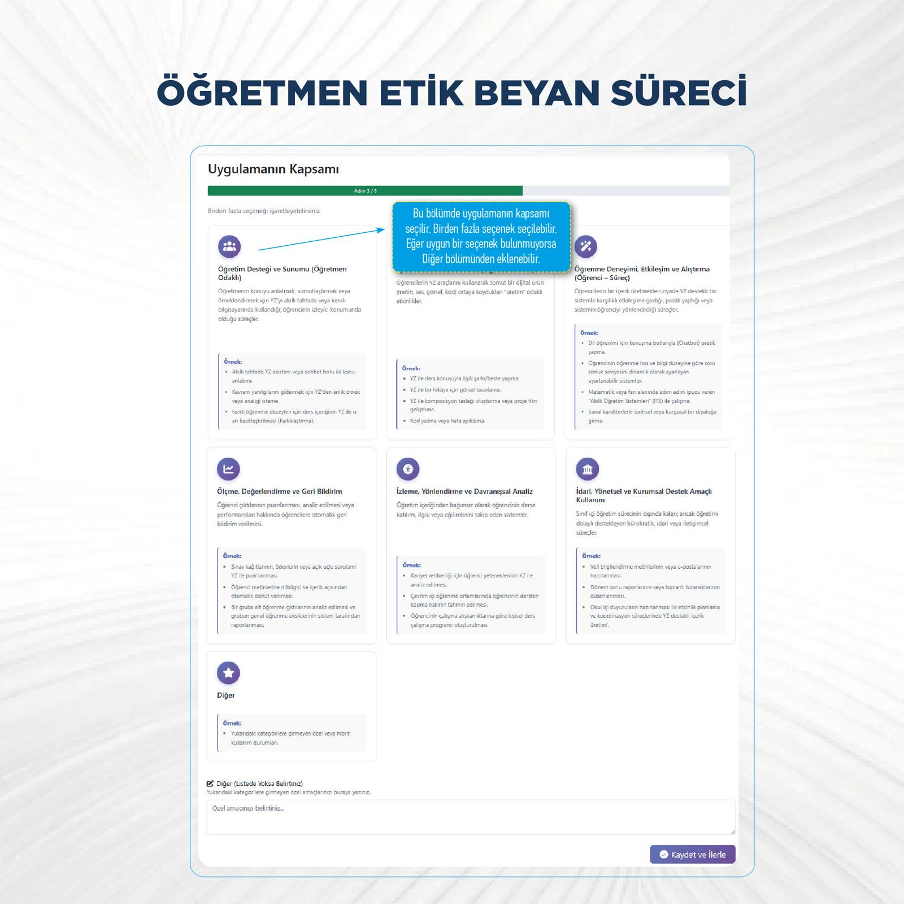
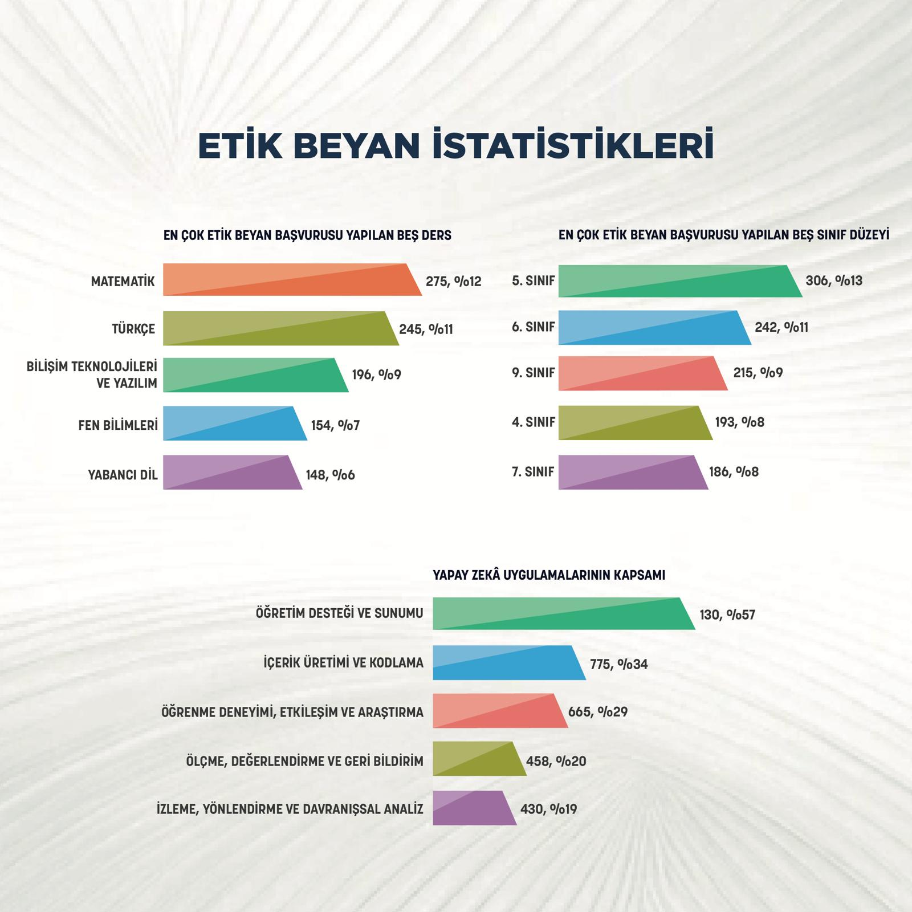
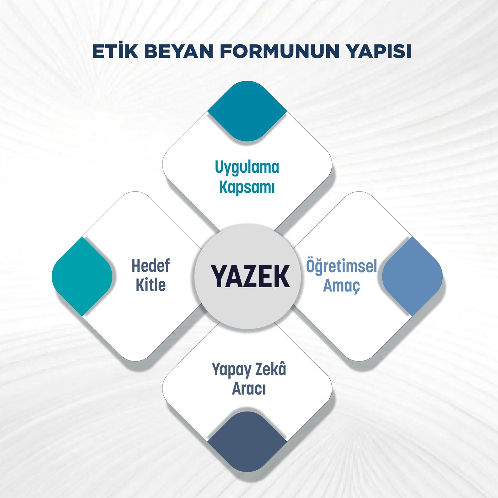
Buradaki kritik nokta şu: Bu bir “izin alma” süreci değildir. Öğretmenimiz bize sormuyor; aksine, “Ben bu teknolojiyi şu etik değerleri koruyarak şu güvenlik önlemleriyle kullanacağım” diyerek taahhüt veriyor ve hemen uygulamasına başlıyor. Başında bir kurulun onayını beklemiyor.
Okullarımızda, il/ilçelerimizde kurduğumuz Yapay Zekâ Etiği Ekipleri ve kurullar birer “denetmen” değil, birer “rehberdir.” Sadece ve sadece bariz bir risk, örneğin kişisel verilerin korunmasına aykırı bir durum veya bir mahremiyet ihlali, tespit edilirse öğrenci ve öğretmeni korumak açısından “Lütfen durun, burada bir risk var” diyerek müdahale edebilirler.
Özetle hedefimiz şudur: Hata yapıldığında ceza kesen bir sistem değil, hata daha oluşmadan onu engelleyen, öğretmenimizi koruyan ve okullarımızı dijital dünyada daha güvenli kılan bir yapı kurmak. Biz öğretmenin elini zayıflatmaya değil, o eli etik ilkelerle güçlendirmeye geliyoruz.
Süreç son derece şeffaf ve izlenebilir bir iş akışına sahip. Eğer bir öğrenci, veli veya okul personeli; okulda yürütülen yapay zekâ uygulamasında bir etik ihlal (örneğin KVKK aykırılığı, mahremiyet ihlali veya pedagojik olmayan bir yönlendirme) tespit ederse, durumu bir dilekçe ile okul müdürlüğüne bildiriyor.
Süreç şöyle ilerliyor:
Burada altını çizmek istediğim nokta şudur: Bu mekanizma cezalandırıcı bir refleks değil, “önleyici bir güvence”dir. Amacımız sahadaki sorumlu kullanım kültürünü yerleşik hale getirmektir. Bizim beklentimiz, ihlal başvurularının “yok denecek kadar az” düzeyde kalması çünkü hedef sahadaki uygulamaları daha baştan doğru ilkelere oturtmak.
Kılavuz; yapay zekâ uygulamaları planlanırken ve gerçekleştirilirken gözetilecek sekiz temel etik ilkeyi, uygulama ölçütlerini, etik beyanın hangi durumlarda zorunlu olduğunu ve etik ihlal tanımlarını en ince ayrıntısına kadar tarif eder.
Daha da önemlisi, bildirim ve izleme usulleri ile biraz önce bahsettiğim çok katmanlı yönetişim yapısının (Yapay Zekâ Uygulamaları Etik Üst Kurulu, il/ilçe kurulları ve okul ekipleri) çalışma prensiplerini detaylandırır.
Buradaki temel yaklaşımımız; etik beyanların merkezî ve standart bir biçimde toplanması, ihlal bildirimlerinin ise sistematik ve izlenebilir şekilde takip edilmesini sağlamaktır. Böylece eğitimde kullanılan teknolojilerin etik ilkelere dayalı, güvenli ve kapsayıcı bir çerçevede uygulanmasını hedefliyoruz. Şunu özellikle vurgulamalıyım: Amacımız öğretmenlerimize ekstra bürokratik yük üretmek değil, sahada etik farkındalığı güçlendirerek sorumlu yapay zekâ kullanımını mesleki sorumluluğun bir parçası haline getirmektir.
Bu konu bizim için oldukça önemli. Türkiye Yüzyılı Maarif Modeli kapsamında 26 öğretim programımızı, Avrupa Konseyi’nin “Dijital Vatandaşlık Eğitimi Planlayıcısı” çerçevesinde sistematik olarak inceledik.
Şunu net bir şekilde söyleyebilirim: Bu çalışma, uluslararası literatürde bu ölçekte yapılan İLK çalışmadır. Avrupa Konseyi üye ülkelere bu planlayıcıyı kullanmalarını tavsiye ediyordu ancak bugüne kadar hiçbir ülke bizim yaptığımız gibi bütüncül ve karşılaştırmalı bir program analizi yayımlamamıştı. Çalışmamızın İngilizce çevirisi bizzat Avrupa Konseyi tarafından üstlenildi ve tüm üye ülkelerle paylaşılacak.
Bu analizde gördük ki Maarif Modelimiz; “öğrenme ve yaratıcılık” ile “medya okuryazarlığı” boyutlarında çok güçlü. Bizim YAZEK ile kurduğumuz etik yapı, bu dijital vatandaşlık becerilerini sadece kâğıt üzerinde bırakmıyor; sınıfta, uygulamada ve öğretmenin bilincinde ete kemiğe büründürüyor.
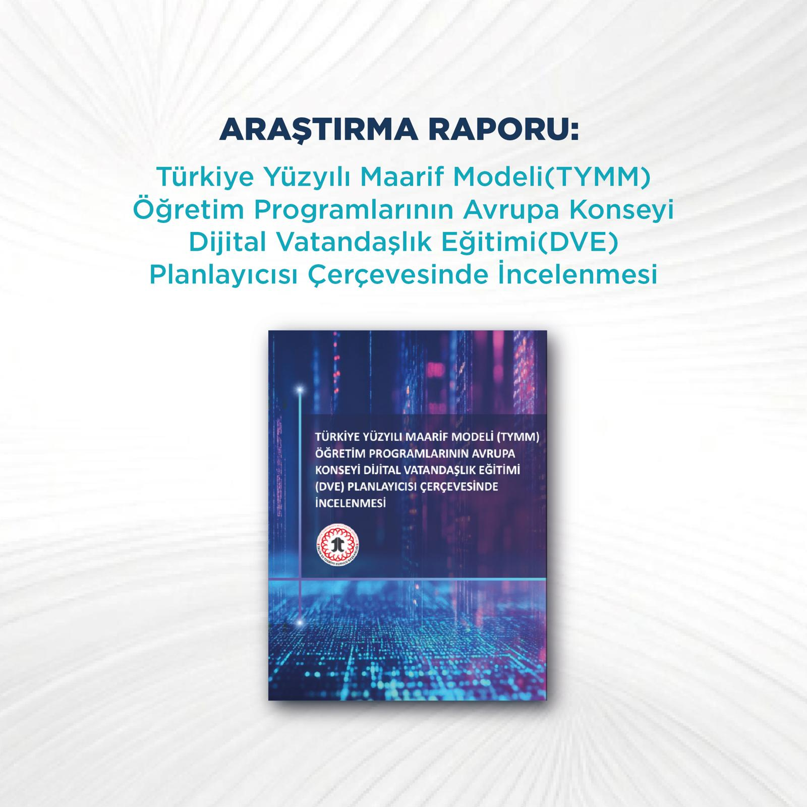
Son bir aylık verilere göre YAZEK sisteminin sahada aktif biçimde kullanıldığını görüyoruz. Öncelikle yönetişim altyapısı büyük ölçüde tamamlanmış durumdadır: 81 ilin tamamında ve 307 ilçede Yapay Zekâ Etik Kurulu oluşturulmuştur. 32.000 okulda Okul Yapay Zekâ Etiği Ekibi kurulmuştur. Bu kurumsal yapılanma ile birlikte sistem kullanımında da dikkat çekici bir yoğunluk söz konusudur: YAZEK platformuna son bir ayda 430.000 giriş yapılmıştır. 2.280 kez Etik Beyan Formu doldurulmuştur. Başvuru dağılımlarına baktığımızda: GÖRSEL 12 En Çok Başvuru Yapılan Dersler: Matematik (275), Türkçe (245), Bilişim Teknolojileri ve Yazılım (196), Fen Bilimleri (154), Yabancı Dil (148) Bu tablo, yapay zekâ uygulamalarının özellikle temel akademik derslerde yoğunlaştığını göstermektedir. Sınıf Düzeyine Göre Başvurular: 5. sınıf (306), 6. sınıf (242), 9. sınıf (215), 4. sınıf (193), 7. sınıf (186) Özellikle ortaokul düzeyinde belirgin bir yoğunluk olduğu görülmektedir. Uygulama Kapsamına Göre ise beyanlar yapay zekâ kullanımının en çok öğretim sürecini destekleme ve içerik üretimi alanlarında yoğunlaştığını; ölçme-değerlendirme ve davranışsal analiz gibi daha hassas alanlarda ise görece daha temkinli bir kullanım eğilimi bulunduğunu göstermektedir.
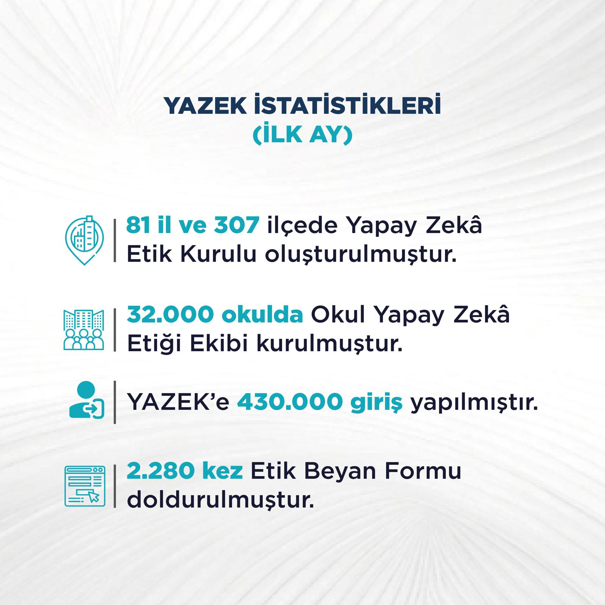
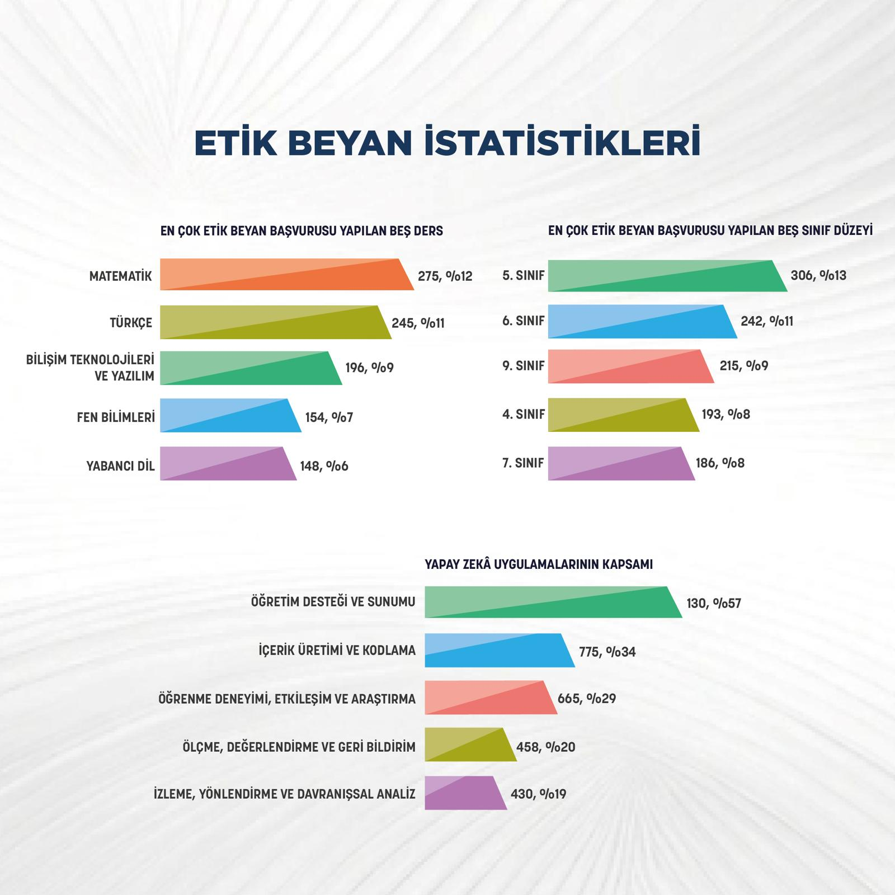
Velilerimiz müsterih olsunlar; 18 milyon evladımızın dijital dünyadaki hakları, verileri ve mahremiyetleri bize emanettir. Öğretmenlerimiz ise bu yeni teknoloji çağında yalnız değiller. YAZEK, onların elindeki yapay zekâ araçlarını sorumlu, güvenli ve etkili kullanmaları için bir pusuladır. Biz “önce etik” diyoruz çünkü ahlaki ve etik bir temel üzerine inşa edilmeyen hiçbir teknolojik gelişim, insanlığa kalıcı bir fayda sağlayamaz.